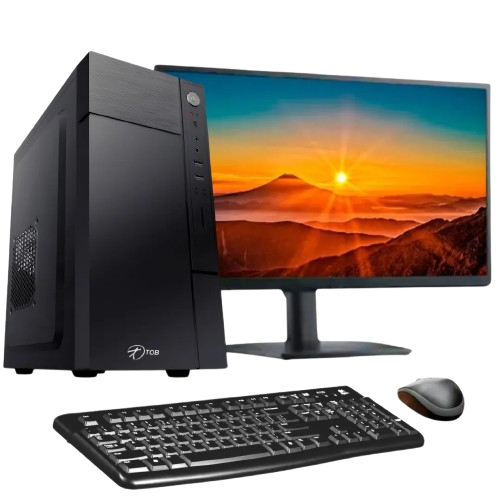

Desktop
Um desktop PC, ou computador de mesa, é um computador pessoal projetado para uso estacionário, geralmente sobre uma mesa.

Um desktop PC, ou computador de mesa, é um computador pessoal projetado para uso estacionário, geralmente sobre uma mesa.
